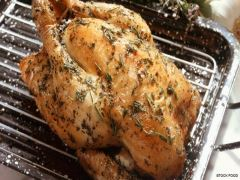

~TheSavoury~
Ingredients
Try this roast with chicken and special stuffing with rosemary, parsley and of course butter.
Boil the milk, pour it over the wheatmeal and let soak, covered.?? Heat the butter and fry the leek until golden brown. Stir in the parsley. Add the milk and wheatmeal and bring to a boil quickly. Let the stuffing cool slightly and mix in 1 tsp rosemary, 1/2 tsp salt, 1 pinch pepper and the egg.?? Heat the oven to 220C (200C fan) 425F, gas 7.? Spoon the stuffing into the cavity of the chicken and sew up with kitchen yarn. Rub the remaining rosemary with a little salt and pepper into the skin.?? Lay the chicken breast downwards on a wire rack in a roasting pan. Dot the chicken with small pieces of butter and roast for approx. 25 minutes. Turn the chicken over and roast for a further 30-35 minutes until done.?